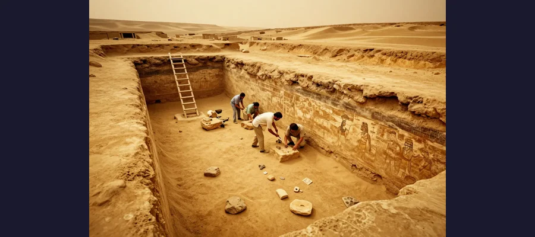
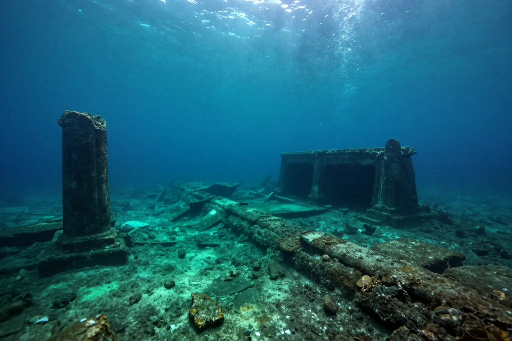

Cleopatra's Lost Tomb: Where Is Egypt's Last Queen Buried?

The tomb of Cleopatra VII, the last pharaoh of Egypt, has never been found. A 2025 underwater port discovery near Taposiris Magna has reignited the search.
Cleopatra VII ruled Egypt for 21 years, allied with Julius Caesar and Mark Antony, and died by suicide in 30 BCE rather than be paraded through Rome as a captive. She was one of the most powerful and educated women in the ancient world — yet her tomb has never been found.
Ancient sources say Cleopatra and Mark Antony were buried together in a magnificent tomb near Alexandria. The Greek historian Plutarch wrote that Octavian (later Emperor Augustus) allowed them to be buried together after their deaths. But Alexandria's coastline has shifted dramatically over 2,000 years, and much of the ancient city now lies underwater.
For decades, archaeologists searched in vain. Then in 2005, Dominican lawyer-turned-archaeologist Kathleen Martínez proposed a radical theory: Cleopatra's tomb might be at Taposiris Magna, an ancient temple complex 30 miles west of Alexandria. Her ongoing excavation has turned up mummies, coins bearing Cleopatra's likeness, and a tunnel system stretching deep underground.
Evidence
Evidence for Cleopatra's burial location comes from ancient texts, archaeological discoveries, and geological analysis.
Key findings at Taposiris Magna include:
- 🏛️ Temple of Osiris: The site is dedicated to Osiris, god of the afterlife — a fitting burial place for a pharaoh who considered herself the reincarnation of Isis.
- 🪙 Cleopatra-era coins: Coins bearing Cleopatra's portrait and Mark Antony's image have been found at the site.
- 🕳️ Underground tunnels: A network of tunnels extending 1,300 meters has been discovered, including a deep shaft that may lead to burial chambers.

The Taposiris Magna temple complex where archaeologists have been searching for Cleopatra's tomb since 2005
🌊 The 2025 Port Discovery
In September 2025, archaeologists discovered a submerged ancient port near Taposiris Magna, connected to the temple by a tunnel. This port may have been used to transport Cleopatra's body to her burial site — bringing researchers closer than ever to finding her tomb.
Competing Explanations
Several theories compete about where Cleopatra is buried.
Taposiris Magna theory: Kathleen Martínez believes Cleopatra chose Taposiris Magna because it honored Osiris and Isis — gods she associated with herself and Mark Antony. The 2025 underwater port discovery strengthens this theory by showing the site was more important than previously thought.

The 2025 discovery of a submerged port near Taposiris Magna reignited hopes of finding Cleopatra's tomb
Alexandria Royal Cemetery theory: Other scholars argue Cleopatra was buried in the royal quarter of Alexandria, now mostly submerged. Earthquakes and tsunamis in the 4th and 14th centuries caused large sections of the ancient city to sink into the Mediterranean.
Lost forever theory: Some Egyptologists believe the tomb was destroyed in antiquity — either by the Romans, by early Christians, or by natural disasters — and no trace will ever be found.
📊 20 Years of Digging
Kathleen Martínez has spent over 20 years and led 14 excavation seasons at Taposiris Magna. She has found 27 tombs, 10 mummies, and hundreds of artifacts — but not Cleopatra. She remains convinced the tomb is there.
Open Questions
The search for Cleopatra's tomb raises questions that may take decades to answer.
Is Taposiris Magna the right place? The 2025 port discovery adds weight to Martínez's theory, but conclusive proof remains elusive. Ground-penetrating radar has detected voids deep underground that could be burial chambers, but excavating them is technically challenging and politically sensitive.
What would finding the tomb mean? Discovering Cleopatra's intact tomb would be one of the greatest archaeological finds in history — comparable to Howard Carter's discovery of Tutankhamun's tomb in 1922. It could reshape our understanding of the final days of Ptolemaic Egypt.
Until then, Cleopatra's final resting place remains one of archaeology's greatest unsolved mysteries!
📖 Recommended Reading
Want to learn more? Check out Cleopatra: A Life by Stacy Schiff on Amazon for a deeper dive into this fascinating topic. (As an Amazon Associate, we earn from qualifying purchases.)
References & Further Reading
- CNN: Sunken ancient port may lead to Cleopatra's tomb
- National Geographic: Ancient port from Cleopatra's time
- Archaeology Magazine: Lost port discovery
- Britannica: Cleopatra VII
Editorial note: reconstructions are continuously revised as imaging and inscription studies improve. See our Editorial Policy.